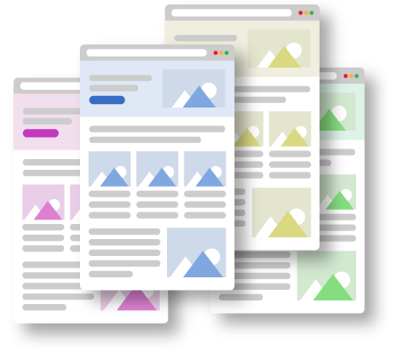

Playbook de geração de demanda Tarso
Coleção de LPs focadas em ICPs estratégicos: Diretores de TI, CEOs/COOs que precisam de portais digitais, gestores de e-commerce e CFOs que buscam integração financeira e previsibilidade.

Cada LP conversa diretamente com um perfil decisor diferente do seu funil B2B.
Focada em diagnóstico de arquitetura, cloud, DevOps e sustentação.
Abrir LP de TI →Voltada para CEOs/COOs que precisam de um portal ou plataforma interna.
Abrir LP de Portal Digital →Para CFOs e Heads de Operações que precisam integrar o financeiro ao resto da operação.
Abrir LP CFO / Operações →